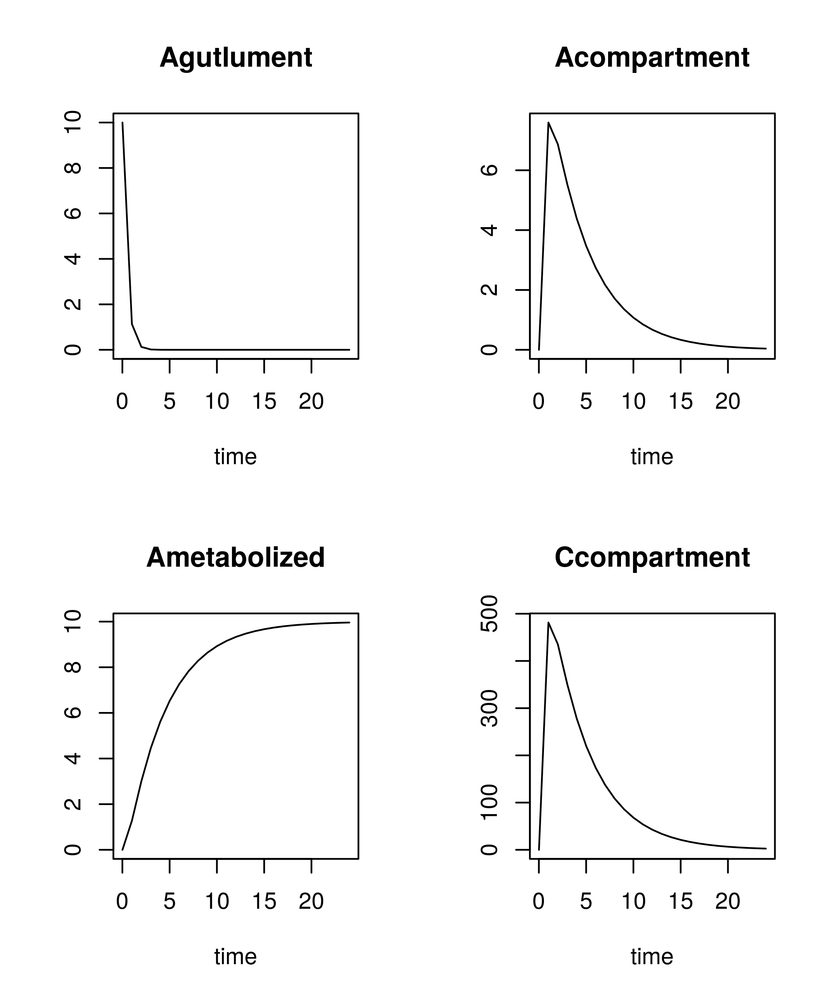
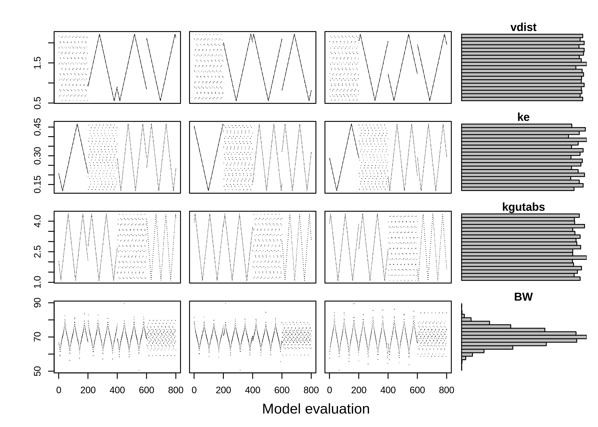
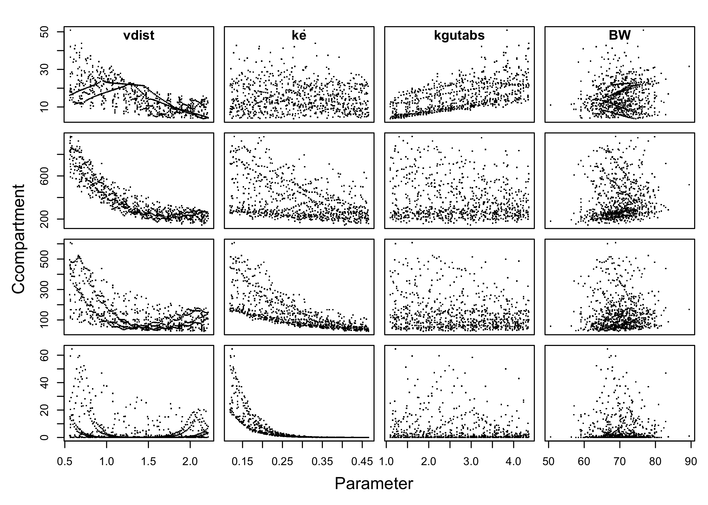

In this example, we use a generic, one-compartment PK model from httk package (Pearce et al. 2017) to demonstrate how pksensi can be applied to pharmacokinetic studies.
Equations
The differential equations for the one-compartment PK model can be written as:
\[\frac{dA_{gutlumen}}{dt} = -k_{gutabs} \cdot A_{gutlumen} + g(t)\] \[\frac{dC_{rest}}{dt} = \frac{k_{gutabs}}{V_{dist}}-k_{elim} \cdot C_{rest}\]
where \(A_{gutlumen}\) is the state variable that describes the quantity of compound in the gut lumen (mg) and \(A_{rest}\) is the quantity of compound in rest of body and blood (mg). The parameter \(k_{gutabs}\) is the absorption rate constant that describes the chemical absorption from the gut lumen into gut tissue through first-order processes (/h) and \(k_{elim}\) is the elimination rate constant (/h), which is equal to the total clearance divided by the volume of distribution. The time-dependent function \(g(t)\) is used to describe the oral dosing schedule.
The concentration of the chemical in the rest of body and blood (\(C_{rest}\), mg/L) can be calculated as
\[ C_{rest} = A_{rest} / V_{dist} \cdot BW\]
where \(V_{dist}\) is the volume of distribution (L/kg BW) and \(BW\) is the body weight (kg). The \(C_{rest}\) can also be seen as the chemical concentration in plasma that can be further used to compare with observed results in a pharmacokinetic experiment. The bioavailability is assumed to be 100% in this model.
Model implementations with deSolve solving engine
To start, we implemented the one-compartment PK model in R. The pksensi allows users select the preferred method to solve the PK model, either with the deSolve (Soetaert, Petzoldt, and Setzer 2010) package or with GNU MCSim (Bois and Maszle 1997) through the compile function. This section will show how to conduct global SA with pure R and GNU MCSim model code.
Pure R model code
The one-compartment PK model can describe the quantity of compound in the gut lumen (Agutlument) and the rest of body (Acompartmant). The Ametabolized is the quantity of compound transform and metabolize through hepatic clearance. The model mainly includes two state variables that are the quantity of compound in the gut lumen (Agutlument) and the rest of body (Acompartmant). The Ametabolized is the quantity of compound transform and metabolize through hepatic clearance.
pbtk1cpt <- function(t, state, parameters) {
with(as.list(c(state, parameters)), {
dAgutlument = - kgutabs * Agutlument
dAcompartment = kgutabs * Agutlument - ke * Acompartment
dAmetabolized = ke * Acompartment
Ccompartment = Acompartment / vdist * BW;
list(c(dAgutlument, dAcompartment, dAmetabolized),
"Ccompartment" = Ccompartment)
})
}The parameter values and initial states need to be assigned to specific values before simulation. Here, we use the corresponding parameter value of acetaminophen in this example. These model parameters are derived from the in-vivo or in-vitro experiment results. The parameter value can be generated from parameterize_1comp function in httk package as:
#> Vdist kelim
#> "1.10454719417686" "0.234651156880308"
#> Clint Clint.dist
#> "1.01401869158879" NA
#> Funbound.plasma Funbound.plasma.dist
#> "0.974570085168516" NA
#> Funbound.plasma.adjustment Fhep.assay.correction
#> "0.974570085168516" "0.949147354438064"
#> Pow pKa_Donor.pKa_Donor
#> "3.61015625938639" "9.4"
#> pKa_Accept.pKa_Accept MA
#> NA NA
#> kgutabs Rblood2plasma
#> "2.18" "1"
#> million.cells.per.gliver liver.density
#> "110" "1.05"
#> hematocrit MW
#> "0.44" "151.165"
#> Fgutabs hepatic.bioavailability
#> "1" "0.875484195298067"
#> BW
#> "70"parms <- c(vdist = pars1comp$Vdist,
ke = pars1comp$kelim,
kgutabs = pars1comp$kgutabs,
BW = pars1comp$BW)
initState <- c(Agutlument = 10, Acompartment = 0, Ametabolized = 0)
parms#> vdist ke kgutabs BW
#> 1.1045472 0.2346512 2.1800000 70.0000000The given value of vdist, ke, and kgutabs in httk are 1.1 (L/kg BW), 0.23 (/h), and 2.18 (/h), respectively. The body weight is assumed to be 70 (kg).
Here shows the given parameter value (parms) and initial state condition (initState) that need to specify in model solving. Both parms and initState are “numeric variables” that contain the value of parameter and initial state condition.
Using the ode() function in deSolve package, we can visualize the PK profile according to the given parameter baseline and the time points (t).
library(deSolve)
t <- seq(from = 0.01, to = 24.01, by = 1)
y <- ode(y = initState, times = t, func = pbtk1cpt, parms = parms)
Setting up the parameter distributions. The distribution of parameter is taken to be uniform with bounds corresponding to 50% and 200% of the nominal value.
params <- c("vdist", "ke", "kgutabs", "BW")
q <- c("qunif", "qunif", "qunif", "qnorm")
q.arg <- list(list(min = pars1comp$Vdist / 2, max = pars1comp$Vdist * 2),
list(min = pars1comp$kelim / 2, max = pars1comp$kelim * 2),
list(min = pars1comp$kgutabs / 2, max = pars1comp$kgutabs * 2),
list(mean = pars1comp$BW, sd = 5))
q.arg#> [[1]]
#> [[1]]$min
#> [1] 0.5522736
#>
#> [[1]]$max
#> [1] 2.209094
#>
#>
#> [[2]]
#> [[2]]$min
#> [1] 0.1173256
#>
#> [[2]]$max
#> [1] 0.4693023
#>
#>
#> [[3]]
#> [[3]]$min
#> [1] 1.09
#>
#> [[3]]$max
#> [1] 4.36
#>
#>
#> [[4]]
#> [[4]]$mean
#> [1] 70
#>
#> [[4]]$sd
#> [1] 5The parameter ranges are assumed to be 0.55 and 2.2 L/kg BW for vdist. The ke are ranged from 0.12 to 0.47 /h, corresponding to half-times of 1.5 and 5.8 hr. The ka are ranged 1.09 to 4.36 /h. The BW is assumed to a normal distribution with mean = 70 kg and sd = 5 kg.
Here, we set a sample size of 200 with 10 replications. Through rfast99() function, a S3 object with class rfast99 will be created. The set.seed() can use to reproduce the same parameter matrix in the random sampling. The sample size determines the robustness of the result of SA. Higher number of sample size lead to narrower confidence intervals for sensitivity measurements across different replications. However, it will take a longer time in computation.
The generated parameters are stored as a 3-D array under the named a, with the dimension of sample size, the number of replications, and the number of parameters, respectively.
#> [1] 800 10 4The sample number is 200, with 4 model parameters, which generates 800 model evaluations. The replication is set to 10. Therefore, the total of 8,000 parameter sequence will be used to compute the corresponding outputs. Figure plotted the sampling process for each parameter from the first 3 replications. The search curves show the different intensity of sampling patterns in each segment.
par(mfrow=c(4,4),mar=c(0.8,0.8,0.8,0),oma=c(4,4,2,1), pch =".")
for (j in c("vdist", "ke", "kgutabs", "BW")) {
if ( j == "BW") {
plot(x$a[,1,j], ylab = "BW")
} else plot(x$a[,1,j], xaxt="n", ylab = "")
for (i in 2:3) {
if ( j == "BW") {
plot(x$a[,i,j], ylab = "", yaxt="n")
} else plot(x$a[,i,j], xaxt="n", yaxt="n", ylab = "")
}
hist <- hist(x$a[,,j], plot=FALSE,
breaks=seq(from=min(x$a[,,j]), to=max(x$a[,,j]), length.out=20))
barplot(hist$density, axes=FALSE, space=0, horiz = T, main = j)
}
mtext("Model evaluation", SOUTH<-1, line=2, outer=TRUE)
Because the PK model is being used to describe a continuous process for the chemical concentration over time, the sensitivity measurements, therefore, have the time-dependent relationships for each model parameter. Here we use the defined output time points (t) to examine the change of the parameter sensitivity over time. To solve the model through deSolve, we need to provide the details of the argument, which include time (t), initial conditions of state variable (initState), output variables (outnames), and name of the model function (func). To create the time-dependent sensitivity measurement, we set the time duration from 0.01 to 24.01 hours with the time segment of 1 hour as the above definition in ode() function in this example. The initial time point should avoid 0 to prevent computational error in misconduct. The outnames is based on the arguments from the ode() function in deSolve package.
outputs <- c("Ccompartment", "Ametabolized")
out <- solve_fun(x, time = t, func = pbtk1cpt, initState = initState, outnames = outputs)#> Starting time: 2020-02-05 16:02:57#> Ending time: 2020-02-05 16:04:50The output result out is an S3 object of rfast99() as well, which can link with print(), plot(), and check() method to examine the sensitivity measurements. The print() function gives the sensitivity and convergence indices for main, interaction, and total order at each time point. In addition to print out the result of SA, the more efficient way to distinguish the influence of model parameter is to visualize these indices.

The SI has computed range from 0 (no impact) to 1 (high impact) and represents the contribution percentage of output variance under the given parameter distributions. The solid line represents the total (black) and first (red) order SI with 95% confidence interval (polygon). The dashed line is the cut-off with the default value of 0.05.
Here, we can see that vdist and ke dominate the plasma concentration before and after 5-hr post chemical intake, respectively. The parameter kgutabs only plays a crucial role to determine the plasma concentration in the first hour. However, the current result only based on the distribution of model parameters for APAP. Given different input conditions (e.g., range of parameter uncertainty, chemical-dependent parameter value) the result can of course change (result not shown).
The default output in the plotting is setting at the first variable. To exam the time-dependent SI of other variables, such as Ametabolized in this case, we need to assign the variable name vars = "Ametabolized" in plot() function.

The amount of metabolized is also determined by parameter ke. Same as Ccompartment, the kgutabs contribute about 30 - 40% variation of model output in the first hour. The BW is the least important parameter in the current analysis, and therefore, can be fixed in the model fitting to data and additional applications.
In addition to using the time-SI profile to investigate the parameter impact on model output, we can directly examine the relationship between parameters and model output graphically.
par(mfcol=c(4,4),mar=c(0.8,0.8,0,0),oma=c(4,4,2,1), pch = ".")
plot(x$a[,1,"vdist"], out$y[,1,"0.01",1], xaxt="n", main = "\nvdist")
plot(x$a[,1,"vdist"], out$y[,1,"2.01",1], xaxt="n")
plot(x$a[,1,"vdist"], out$y[,1,"6.01",1], xaxt="n")
plot(x$a[,1,"vdist"], out$y[,1,"24.01",1])
for (j in c("ke", "kgutabs", "BW")){
for (k in c("0.01", "2.01", "6.01", "24.01")){
if (k == "0.01") {
plot(x$a[,1,j], out$y[,1,k,1], yaxt = "n", xaxt="n", main = paste0("\n", j))
} else if (k == "24.01") {
plot(x$a[,1,j], out$y[,1,k,1], yaxt = "n")
} else plot(x$a[,1,j], out$y[,1,k,1], xaxt = "n", yaxt = "n")
}
}
mtext("Parameter", SOUTH<-1, line=2, outer=TRUE)
mtext("Ccompartment", WEST<-2, line=2, outer=TRUE)
Here shows the relationship between the concentration of the rest of the body (Ccompartment) and the model parameters at times 0.01, 2.01, 6.01, and 24.01 hr (top to bottom), respectively. We can find that kgutabs and vdist have higher correlation with Ccompartment in the beginning (t = 0.01 h) of post-intake duration compared with other parameters, suggesting that the parameters have high impact on the modeling result. The ke shows a high correlation at the later time period (t = 24.01 h). The parameter BW does not show any obvious relationship with Ccompartment.
The output variable out containing all the input arguments detailed above and the calculated SI of first order (mSI), interaction (iSI), and total order (tSI). Convergence indices are also stored in the list named mCI, iCI, and tCI. The outputs are formatted as 4-D array in y with the dimension name of model evaluation, number of replications, number of time points, and number of output variables, respectively.
#> [1] 800 10 25 2Some functions in pksensi provide efficient ways to check the result from global SA. The check() can determine which parameters have relatively lowered sensitivity measurement across the given time points and model outputs, and therefore can be applied parameter fixing in model calibration. The check() also provides an argument to specify the target output or change the cut-off value. The argument of SI.cutoff set for example at 0.05, is used to detect the relative non-influential parameters as default, in this case representing a 5% change of the output is contributed from the specific parameter variation.
#>
#> Sensitivity check ( Index > 0.05 )
#> ----------------------------------
#> First order:
#> vdist ke kgutabs
#>
#> Interaction:
#> vdist ke kgutabs
#>
#> Total order:
#> vdist ke kgutabs
#>
#> Unselected factors in total order:
#> BW
#>
#>
#> Convergence check ( Index > 0.05 )
#> ----------------------------------
#> First order:
#> ke kgutabs
#>
#> Interaction:
#> vdist
#>
#> Total order:
#> vdist keBased on the sensitivity measurement of the total order, the result shows that BW has a relative lower measurement of SI. However, all parameters do not converge to the setting cut-off, which means the larger sample size is required in further sensitivity testing. Similar to the plot() function that can assign specific output variable in the examination, the check() function can also use the assignment (vars) to examine a given output.
GNU MCSim model code
Running model under GNU MCSim native code can have a faster speed to obtain the model outputs. This subsection will show how to conduct global SA with deSolve package with GNU MCSim model code.
#> ## pbtk1cpt.model (Based on R httk package) ----
#>
#> States = { Agutlument, Acompartment, Ametabolized };
#> Outputs = { Ccompartment };
#>
#> kgutabs = 1; # absorption rate constant (/h)
#> vdist = 1; # volume of distribution (L/kg BW)
#> ke = 1; # elimination rate constant (/h)
#> BW = 70; # Body weight (kg)
#>
#> Dynamics {
#> dt (Agutlument) = - kgutabs * Agutlument;
#> dt (Acompartment) = kgutabs * Agutlument - ke * Acompartment;
#> dt (Ametabolized) = ke * Acompartment;
#> Ccompartment = Acompartment / vdist * BW;
#> }
#> End.The code must first be compiled to run the model. After create the model file, we can use compile_model() function to generate the file that has dynamic-link library (DLL) or share object (SO) extention and can be linked dynamically into an R session (pbtk1cpt.dll on Windows or pbtk1cpt.so on other systems) and R file (pbtk1cpt_inits.R) with default input parameters and initial state settings with the definition of application = "R".
#> * Created file 'pbtk1cpt.so'.The pbtk1cpt_inits.R file includes initParms and initStates functions and Outputs variable. The created function have default value of model parameters and initial conditions that can further use to customize in the simulation.
The parameter values and initial states can be customized to the specific condition. It can also schedule for the given dosing scenario. In the current setting, we assumed the initial condition of the intake dose to be 1000 mg. We can use initParms and initStates functions to customize the parameter values and the initial state that will be used in the following modeling and SA. These additional functions are generated when compiling the model file. We used the the same parameter values in this section.
parms <- initParms()
parms["vdist"] <- pars1comp$Vdist
parms["ke"] <- pars1comp$kelim
parms["kgutabs"] <- pars1comp$kgutabs
parms["BW"] <- pars1comp$BW
initState <- initStates(parms=parms)
initState["Agutlument"] <- 10Here shows the given parameter value (parms), initial state condition (initStat), and the output variable (Outputs) that need to specify in model solving.
#> kgutabs vdist ke BW
#> 2.1800000 1.1045472 0.2346512 70.0000000#> Agutlument Acompartment Ametabolized
#> 10 0 0#> [1] "Ccompartment"Using the ode() function in deSolve package. Unlike above example, we have to assign additional arguments, such as dllname, initfunc, nout, and outnames.
t <- seq(from = 0.01, to = 24.01, by = 1)
y <- ode(y = initState, times = t, func = "derivs", parms = parms,
dllname = mName, initfunc = "initmod",
nout = 1, outnames = Outputs)#> time Agutlument Acompartment Ametabolized Ccompartment
#> [1,] 0.01 1.000000e+01 0.000000 0.000000 0.0000
#> [2,] 1.01 1.130417e+00 7.595630 1.273954 481.3684
#> [3,] 2.01 1.277835e-01 6.865602 3.006615 435.1033
#> [4,] 3.01 1.444480e-02 5.526698 4.458857 350.2511
#> [5,] 4.01 1.632912e-03 4.381743 5.616624 277.6902
#> [6,] 5.01 1.845777e-04 3.466527 6.533289 219.6890Same as above, use the following code to define the parameter distributions and generate parameter matrix.
# Define parameter distribution
q <- c("qunif", "qunif", "qunif", "qnorm")
q.arg <- list(list(min = parms["vdist"] / 2, max = parms["vdist"] * 2),
list(min = parms["ke"] / 2, max = parms["ke"] * 2),
list(min = parms["kgutabs"] / 2, max = parms["kgutabs"] * 2),
list(mean = parms["BW"], sd = 5))
params <- c("vdist", "ke", "kgutabs", "BW")
# Generate parameter matrix
set.seed(1234)
x <- rfast99(params, n = 200, q = q, q.arg = q.arg, replicate = 20)Run simulation and check result.
outputs <- c("Ccompartment", "Ametabolized")
out <- solve_fun(x, time = t, initState = initState, outnames = outputs, dllname = mName)#> Starting time: 2020-02-05 16:04:52#> Ending time: 2020-02-05 16:05:06#>
#> Sensitivity check ( Index > 0.05 )
#> ----------------------------------
#> First order:
#> vdist ke kgutabs
#>
#> Interaction:
#> vdist ke kgutabs
#>
#> Total order:
#> vdist ke kgutabs
#>
#> Unselected factors in total order:
#> BW
#>
#>
#> Convergence check ( Index > 0.05 )
#> ----------------------------------
#> First order:
#> vdist ke kgutabs
#>
#> Interaction:
#> vdist ke
#>
#> Total order:
#> vdist ke kgutabsThe simulation time had huge improvement when using GNU MCSim model code.
Model Implementation with GNU MCSim solving engine
In addition to use deSolve to solve differential equations in PK model, the GNU MCSim can provide better computational efficiency. To solve ODE through GNU MCSim, we need to change the argument to application = mcsim in compile_model() function. The computing time of using solve_fun() function in SA is estimated as,
#> Starting time: 2020-02-05 16:05:06#> Ending time: 2020-02-05 16:05:19#> user system elapsed
#> 12.876 0.004 12.888Then, before we conduct the SA through GNU MCSim, The following code is used to compile the GNU MCSim model code to the executable program.
#> * Created executable file 'mcsim.pbtk1cpt'.Similar to solve_fun() function that can define the initial value of parameter and state variable through generated functions, the solve_mcsim() also has a condition argument that can be used to give the specific input value such as exposure dose, fixed parameter value or initial condition of state variable.
conditions <- c("Agutlument = 10")
system.time(out <- solve_mcsim(x, mName = mName, params = params,
vars = Outputs, time = t,
condition = conditions))#> Starting time: 2020-02-05 16:05:19#> * Created input file "sim.in".#> Execute: ./mcsim.pbtk1cpt sim.in#> Ending time: 2020-02-05 16:05:23#> user system elapsed
#> 2.897 0.170 3.060After solving the equations under the same given condition, we can find that GNU MCSim provide faster speed in computing performance than using deSolve. In this case, we only focus on performing the global SA alone for generic PK model without additonal comparison with experiment data. The PBPK example will display and reproduce our previous published result (Hsieh et al. 2018) with full global SA workflow.
Session Info
#> R version 3.6.2 (2019-12-12)
#> Platform: x86_64-pc-linux-gnu (64-bit)
#> Running under: elementary OS 5.1 Hera
#>
#> Matrix products: default
#> BLAS: /usr/lib/x86_64-linux-gnu/openblas/libblas.so.3
#> LAPACK: /usr/lib/x86_64-linux-gnu/libopenblasp-r0.2.20.so
#>
#> locale:
#> [1] LC_CTYPE=en_US.UTF-8 LC_NUMERIC=C
#> [3] LC_TIME=en_US.UTF-8 LC_COLLATE=en_US.UTF-8
#> [5] LC_MONETARY=en_US.UTF-8 LC_MESSAGES=en_US.UTF-8
#> [7] LC_PAPER=en_US.UTF-8 LC_NAME=C
#> [9] LC_ADDRESS=C LC_TELEPHONE=C
#> [11] LC_MEASUREMENT=en_US.UTF-8 LC_IDENTIFICATION=C
#>
#> attached base packages:
#> [1] stats graphics grDevices utils datasets methods base
#>
#> other attached packages:
#> [1] deSolve_1.25 httk_1.10.1 pksensi_1.1.5
#>
#> loaded via a namespace (and not attached):
#> [1] Rcpp_1.0.3 plyr_1.8.4 compiler_3.6.2
#> [4] pillar_1.4.3 tools_3.6.2 getPass_0.2-2
#> [7] digest_0.6.23 lattice_0.20-38 evaluate_0.14
#> [10] memoise_1.1.0 tibble_2.1.3 lifecycle_0.1.0
#> [13] gtable_0.3.0 pkgconfig_2.0.3 rlang_0.4.4
#> [16] Matrix_1.2-18 DBI_1.0.0 rstudioapi_0.10
#> [19] yaml_2.2.0 expm_0.999-4 mvtnorm_1.0-11
#> [22] pkgdown_1.4.1 xfun_0.11 dplyr_0.8.3
#> [25] stringr_1.4.0 knitr_1.25 mitools_2.4
#> [28] desc_1.2.0 fs_1.3.1 rprojroot_1.3-2
#> [31] grid_3.6.2 tidyselect_0.2.5 reshape_0.8.8
#> [34] glue_1.3.1 data.table_1.12.6 R6_2.4.1
#> [37] survival_3.1-8 rmarkdown_2.0 purrr_0.3.3
#> [40] ggplot2_3.2.1 magrittr_1.5 splines_3.6.2
#> [43] backports_1.1.5 scales_1.1.0 htmltools_0.3.6
#> [46] MASS_7.3-51.5 assertthat_0.2.1 colorspace_1.4-1
#> [49] survey_3.36 stringi_1.4.3 lazyeval_0.2.2
#> [52] munsell_0.5.0 msm_1.6.7 crayon_1.3.4References
Bois, Frederic, and Don Maszle. 1997. “MCSim: A Monte Carlo Simulation Program.” Journal of Statistical Software, Articles 2 (9): 1–60. https://doi.org/10.18637/jss.v002.i09.
Hsieh, Nan-Hung, Brad Reisfeld, Frederic Y. Bois, and Weihsueh A. Chiu. 2018. “Applying a Global Sensitivity Analysis Workflow to Improve the Computational Efficiencies in Physiologically-Based Pharmacokinetic Modeling.” Frontiers in Pharmacology 9: 588. https://doi.org/10.3389/fphar.2018.00588.
Pearce, Robert, R. Woodrow Setzer, Cory Strope, Nisha Sipes, and John Wambaugh. 2017. “httk: R Package for High-Throughput Toxicokinetics.” Journal of Statistical Software, Articles 79 (4): 1–26. https://doi.org/10.18637/jss.v079.i04.
Soetaert, Karline, Thomas Petzoldt, and R. Woodrow Setzer. 2010. “Solving Differential Equations in R: Package deSolve.” Journal of Statistical Software, Articles 33 (9): 1–25. https://doi.org/10.18637/jss.v033.i09.